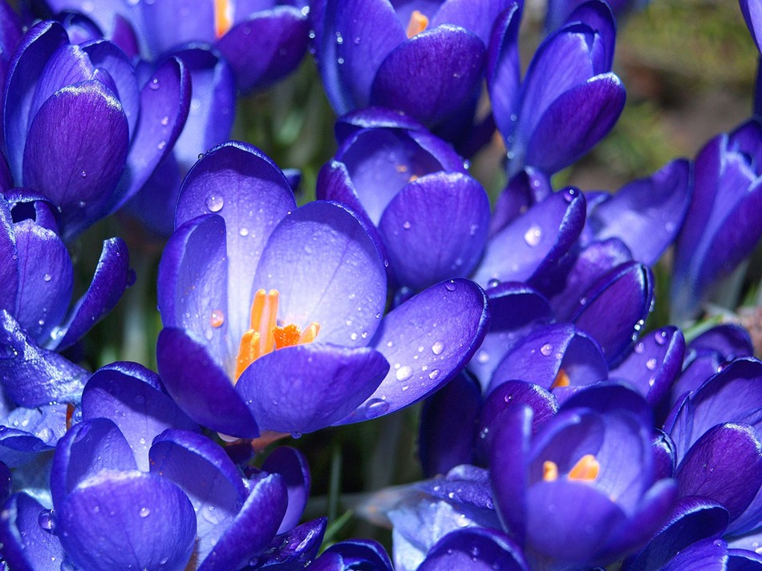

Синий цвет aссоциируется с водой, воздух-
хом, - море, небо, - успокаивает, создаёт ощущение комфор-
та. Цвет стабильности, удовлетворённости. Символизирует
вечные ценности, глубокие раздумья, внимание, самоуглубление-
ление; символизирует высоту и глубину (воздушная перспек-
тива, создающая ощущение пространства, обычно синего цве-
та). Постоянство, преданность, честность, правосудие, со-
совершенство, мир.
У многих народов символизирует небо и вечность. Он
также символизирует доброту, верность, постоянство, рас-
положение, а в геральдике обозначает целомудрие, добрую
славу и верность. «Голубая кровь» говорит о благородном
происхождении; англичане называют истинного протестанта
«синим».
B России словом «синий» обычно называют человека в
нетрезвом состоянии.